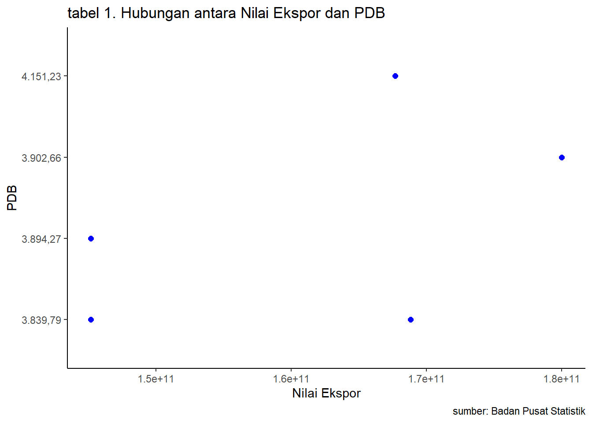

library("tidyverse")
library("readxl")
library("dplyr")PENGARUH NILAI EKSPOR TERHADAP PDB INDONESIA 2016-2020
Metode Penelitian Politeknik APP Jakarta
1 Pendahuluan

1.1 Latar belakang
Latar belakang pengaruh ekspor terhadap PDB adalah sebagai berikut:Ekspor merupakan salah satu komponen utama dari Produk Domestik Bruto (PDB). Pada tahun 2022, ekspor Indonesia menyumbang sekitar 22,7% dari PDB. Hal ini menunjukkan bahwa ekspor memiliki peran yang signifikan terhadap perekonomian Indonesia. Ekspor dapat meningkatkan pendapatan nasional. Ketika barang dan jasa Indonesia dijual ke luar negeri, maka negara akan mendapatkan pendapatan dari penjualan tersebut. Pendapatan ini akan menambah pendapatan nasional dan dapat digunakan untuk membiayai berbagai keperluan pembangunan. Ekspor dapat meningkatkan lapangan kerja. Kegiatan ekspor membutuhkan tenaga kerja untuk menghasilkan barang dan jasa yang akan diekspor. Hal ini dapat menciptakan lapangan kerja baru dan meningkatkan kesempatan kerja bagi masyarakat. Ekspor dapat meningkatkan daya saing perekonomian. Ekspor menunjukkan bahwa produk Indonesia mampu bersaing di pasar internasional. Hal ini dapat meningkatkan kepercayaan dunia internasional terhadap perekonomian Indonesia.
Berdasarkan latar belakang tersebut, maka dapat disimpulkan bahwa ekspor memiliki pengaruh yang positif terhadap PDB. Ekspor dapat meningkatkan pendapatan nasional, lapangan kerja, dan daya saing perekonomian.Oleh karena itu, pemerintah Indonesia terus berupaya untuk meningkatkan ekspor. Hal ini dilakukan melalui berbagai kebijakan, seperti:Pemberian subsidi dan insentif kepada eksportir, Peningkatan kualitas produk dan daya saing dan Pembukaan pasar ekspor baru. Upaya-upaya tersebut diharapkan dapat mendorong peningkatan ekspor dan memberikan manfaat yang lebih besar bagi perekonomian Indonesia.
1.2 Ruang lingkup
Pengaruh langsung ekspor terhadap PDB terjadi ketika pendapatan yang diperoleh dari ekspor langsung ditambahkan ke dalam PDB. Pendapatan ini dapat berupa pendapatan dari penjualan barang dan jasa, pendapatan dari royalti, atau pendapatan dari jasa keuangan.Pengaruh tidak langsung ekspor terhadap PDB terjadi ketika kegiatan ekspor mendorong peningkatan aktivitas ekonomi lainnya, seperti produksi, konsumsi, dan investasi.
1.3 Rumusan masalah
- Bagaimana pengaruh ekspor terhadap pendapatan nasional?
- Bagaimana pengaruh ekspor terhadap pertumbuhan PDB?
1.4 Package
Ini tidak wajib ada di packages yang digunakan antara lain sebagai berikut:
2 Studi pustaka
Ekspor merupakan salah satu komponen utama dari Produk Domestik Bruto (PDB). Pada tahun 2022, ekspor Indonesia menyumbang sekitar 22,7% dari PDB. Hal ini menunjukkan bahwa ekspor memiliki peran yang signifikan terhadap perekonomian Indonesia. Ekspor dapat meningkatkan pendapatan nasional, lapangan kerja, dan daya saing perekonomian. Peningkatan ekspor akan meningkatkan pendapatan nasional karena ketika barang dan jasa Indonesia dijual ke luar negeri, maka negara akan mendapatkan pendapatan dari penjualan tersebut. Pendapatan ini akan menambah pendapatan nasional dan dapat digunakan untuk membiayai berbagai keperluan pembangunan. Peningkatan ekspor juga akan meningkatkan lapangan kerja karena kegiatan ekspor membutuhkan tenaga kerja untuk menghasilkan barang dan jasa yang akan diekspor. Hal ini dapat menciptakan lapangan kerja baru dan meningkatkan kesempatan kerja bagi masyarakat.
3 Metode penelitian
3.1 Data
Penelitian ini menggunakan data nilai ekspor dan PDB.
| Tahun | Nilai Ekspor | PDB |
|---|---|---|
| 2020 | 145186211247 | 3.894,27 |
| 2019 | 167682996134 | 4.151,23 |
| 2018 | 180012674000 | 3.902,66 |
| 2017 | 168828175936 | 3.839,79 |
| 2016 | 145186211247 | 3.839,79 |
#import dataset
library(readxl)
dat<-read_excel('dat.xlsx')
head(dat)# A tibble: 5 × 3
TAHUN eks PDB
<dbl> <dbl> <chr>
1 2020 145186211247 3.894,27
2 2019 167682996134 4.151,23
3 2018 180012674000 3.902,66
4 2017 168828175936 3.839,79
5 2016 145186211247 3.839,79library("ggplot2")
library("readxl")
library("dplyr")
ggplot(data=dat,aes(x=eks,y=PDB)) +
geom_point(color="blue",size=2) +
labs(title="tabel 1. Hubungan antara Nilai Ekspor dan PDB",
x="Nilai Ekspor",
y="PDB",
caption = "sumber: Badan Pusat Statistik") +
theme_classic()
3.2 Metode analisis
Metode yang dipilih adalah regresi univariat atau Ordinary Least Square (OLS) dengan 1 variabel independen. Penelitian ini merbaksud mencari hubungan antara hwy dan cty. Spesifikasi yang dilakukan adalah:
\[ y_{t}=\beta_0 + \beta_1 x_t+\mu_t \] di mana \(y_t\) adalah hwy dan \(x_t\) adalah cty.
4 Pembahasan
4.1 Pembahasan masalah
Pengaruh ekspor terhadap PDB telah menjadi salah satu topik penelitian ekonomi yang populer. Hal ini karena ekspor merupakan salah satu faktor penting yang dapat mendorong pertumbuhan ekonomi. Berdasarkan hasil penelitian yang telah dilakukan, dapat disimpulkan bahwa ekspor memiliki pengaruh yang positif terhadap PDB. Peningkatan ekspor dapat mendorong pertumbuhan PDB, meningkatkan pendapatan nasional, menciptakan lapangan kerja,dan meningkatkan daya saing perekonomian.
Pengaruh ekspor terhadap pertumbuhan PDB, peningkatan ekspor dapat mendorong pertumbuhan PDB karena ekspor dapat menambah pendapatan nasional. Pendapatan nasional yang bertambah dapat digunakan untuk membiayai berbagai keperluan pembangunan, seperti infrastruktur, pendidikan, dan kesehatan.
#import dataset
library(readxl)
dat<-read_excel('dat.xlsx')
head(dat)# A tibble: 5 × 3
TAHUN eks PDB
<dbl> <dbl> <chr>
1 2020 145186211247 3.894,27
2 2019 167682996134 4.151,23
3 2018 180012674000 3.902,66
4 2017 168828175936 3.839,79
5 2016 145186211247 3.839,794.2 Analisis masalah
Hasil regresinya adalah
reg1<-lm(eks~PDB,data=dat)
summary(reg1)
Call:
lm(formula = eks ~ PDB, data = dat)
Residuals:
1 2 3 4 5
0.000e+00 0.000e+00 0.000e+00 1.182e+10 -1.182e+10
Coefficients:
Estimate Std. Error t value Pr(>|t|)
(Intercept) 1.570e+11 1.182e+10 13.282 0.0478 *
PDB3.894,27 -1.182e+10 2.047e+10 -0.577 0.6667
PDB3.902,66 2.301e+10 2.047e+10 1.124 0.4630
PDB4.151,23 1.068e+10 2.047e+10 0.521 0.6940
---
Signif. codes: 0 '***' 0.001 '**' 0.01 '*' 0.05 '.' 0.1 ' ' 1
Residual standard error: 1.672e+10 on 1 degrees of freedom
Multiple R-squared: 0.7109, Adjusted R-squared: -0.1562
F-statistic: 0.8199 on 3 and 1 DF, p-value: 0.655 Kesimpulan
Ekspor merupakan salah satu komponen utama dari Produk Domestik Bruto (PDB). Pada tahun 2022, ekspor Indonesia menyumbang sekitar 22,7% dari PDB. Hal ini menunjukkan bahwa ekspor memiliki peran yang signifikan terhadap perekonomian Indonesia.Berdasarkan hasil penelitian yang telah dilakukan, dapat disimpulkan bahwa ekspor memiliki pengaruh yang positif terhadap PDB. Peningkatan ekspor dapat mendorong pertumbuhan PDB, meningkatkan pendapatan nasional, menciptakan lapangan kerja, dan meningkatkan daya saing perekonomian.Pengaruh ekspor terhadap pertumbuhan PDB adalah Peningkatan ekspor dapat mendorong pertumbuhan PDB karena ekspor dapat menambah pendapatan nasional. Pendapatan nasional yang bertambah dapat digunakan untuk membiayai berbagai keperluan pembangunan, seperti infrastruktur, pendidikan, dan kesehatan. Pembangunan ini dapat mendorong pertumbuhan ekonomi.Pengaruh ekspor terhadap daya saing perekonomian Peningkatan ekspor juga akan meningkatkan daya saing perekonomian karena ekspor menunjukkan bahwa produk Indonesia mampu bersaing di pasar internasional. Hal ini dapat meningkatkan kepercayaan dunia internasional terhadap perekonomian Indonesia.
6 Referensi
http://scholar.unand.ac.id/42633/1/2%20PDF.pdf
https://jurnal.kemendag.go.id/bilp/article/view/185
https://www.google.com/search?q=Apa%20pengaruh%20PDB%20terhadap%20pertumbuhan%20ekonomi%3F